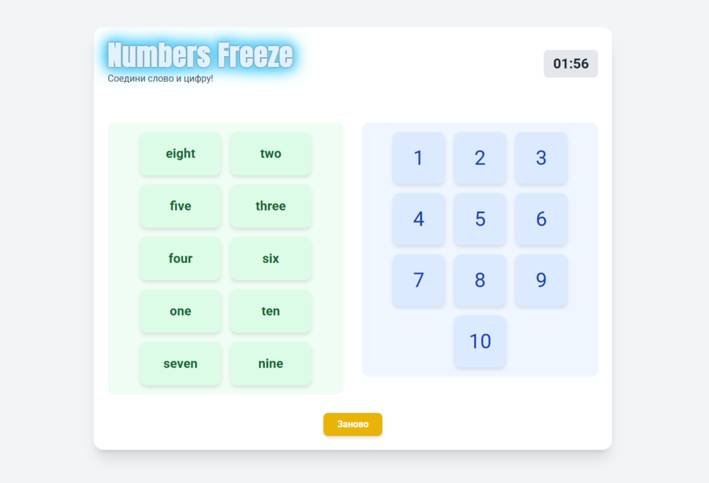

Соедини слово и цифру!
| № | Имя | Очки | Время | Ошибки |
|---|
ЗАМОРОЗКА!
Numbers Freeze — бесплатный игровой тренажёр для знакомства с английскими числительными. Он подойдёт начинающим ученикам и детям, которые учатся узнавать числа на слух и в тексте. В игре два этапа: сначала нужно соединить цифры от 1 до 10 с английскими словами, затем пройти числа от 11 до 20.
Выберите английское слово и соответствующую цифру или сначала цифру, а затем слово. На компьютере также можно перетаскивать карточки мышью. За ошибочный ответ включается короткая заморозка, поэтому внимательность помогает пройти игру быстрее. Нажмите «Далее», чтобы перейти ко второму уровню; кнопка «Заново» начинает прохождение сначала.
Первый уровень закрепляет написание one, two, three, four, five, six, seven, eight, nine и ten. Во втором встречаются eleven, twelve, thirteen, fourteen, fifteen, sixteen, seventeen, eighteen, nineteen и twenty. Обратите внимание на необычные формы thirteen, fifteen и eighteen: их написание полезно запомнить отдельно. Сопоставление слова с цифрой помогает связать английское написание с числовым значением.
После прохождения обоих уровней можно сохранить результат в таблице лидеров. Очки зависят от времени и количества ошибок: точные и быстрые ответы дают преимущество.